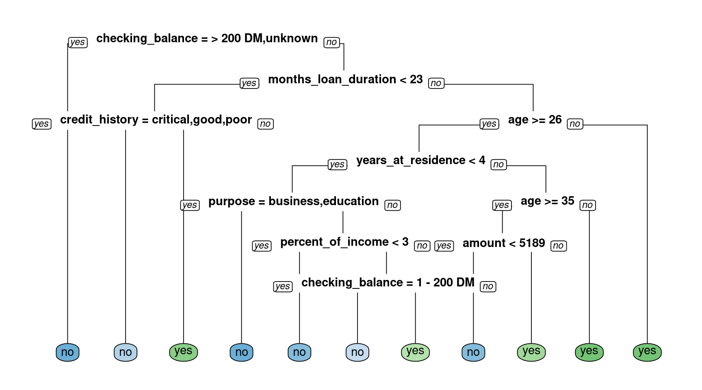
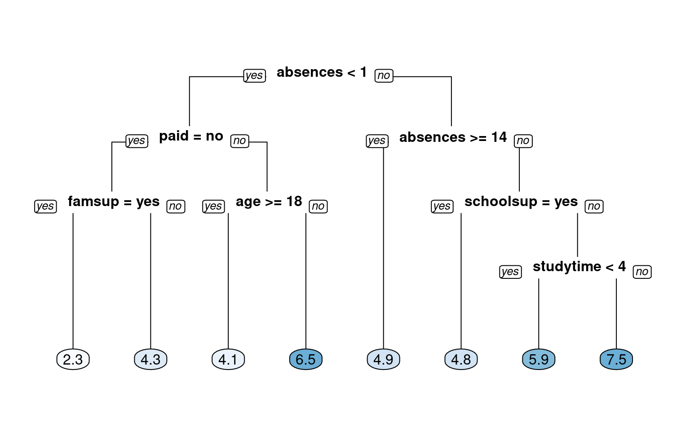
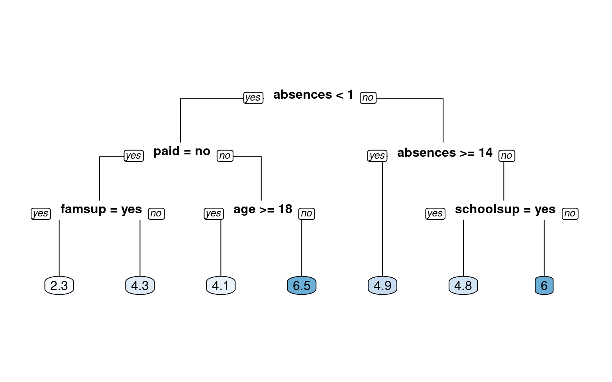
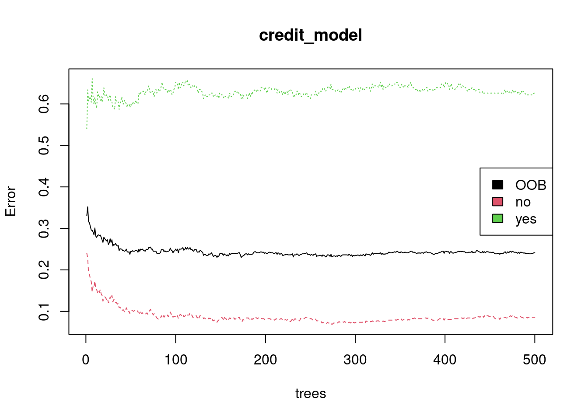
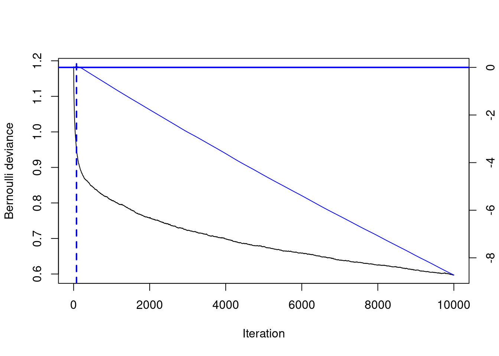
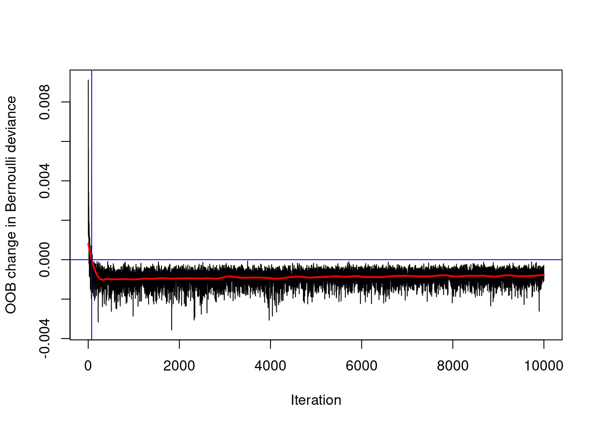
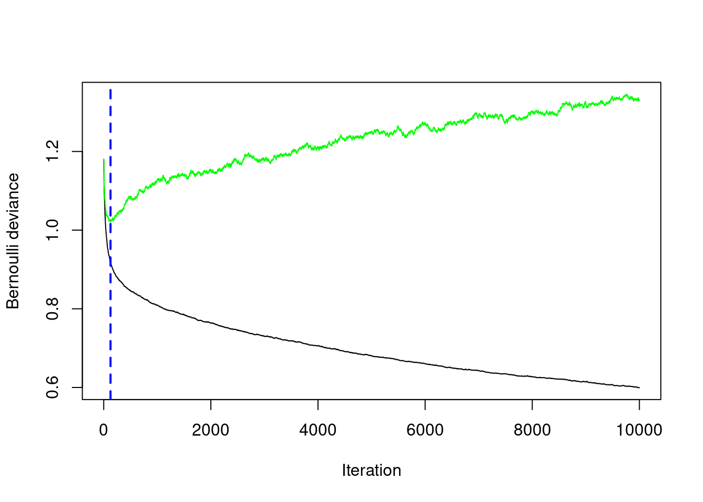

Let’s get started and build our first classification tree. A classification tree is a decision tree that performs a classification (vs regression) task. You will train a decision tree model to understand which loan applications are at higher risk of default using a subset of the German Credit Dataset. The response variable, called “default”, indicates whether the loan went into a default or not, which means this is a binary classification problem (there are just two classes). You will use the rpart package to fit the decision tree and the rpart.plot package to visualize the tree.
# Look at the datalibrary(tidyverse)library(data.table)library(rpart)library(rpart.plot)credit <-fread("credit.csv", stringsAsFactors =TRUE) credit[, default :=factor(default)]creditsub <- credit[sample(1:nrow(credit), 522),]str(creditsub)
# Create the modelcredit_model <-rpart(formula = default ~ ., data = creditsub, method ="class")# Display the resultsrpart.plot(x = credit_model, yesno =2, type =0, extra =0)

Train/test split
For this exercise, you’ll randomly split the German Credit Dataset into two pieces: a training set (80%) called credit_train and a test set (20%) that we will call credit_test. We’ll use these two sets throughout the chapter.
# Total number of rows in the credit data framen <-nrow(credit)# Number of rows for the training set (80% of the dataset)n_train <-round(.8* n) # Create a vector of indices which is an 80% random sampleset.seed(123)train_indices <-sample(1:n, n_train)# Subset the credit data frame to training indices onlycredit_train <- credit[train_indices, ] # Exclude the training indices to create the test setcredit_test <- credit[-train_indices, ] # Train the model (to predict 'default')credit_model <-rpart(formula = default ~., data = credit_train, method ="class")# Look at the model output print(credit_model)
As discussed in the previous video, there are a number of different metrics by which you can measure the performance of a classification model. In this exercise, we will evaluate the performance of the model using test set classification error. A confusion matrix is a convenient way to examine the per-class error rates for all classes at once. The confusionMatrix() function from the caret package prints both the confusion matrix and a number of other useful classification metrics such as “Accuracy” (fraction of correctly classified instances). The caret package has been loaded for you.
library(caret)# Generate predicted classes using the model objectclass_prediction <-predict(object = credit_model, newdata = credit_test, type ="class") # Calculate the confusion matrix for the test setclass_prediction <-factor(class_prediction, levels =levels(credit_test$default) )confusionMatrix(data = class_prediction, reference = credit_test$default, positive ="yes")
Confusion Matrix and Statistics
Reference
Prediction no yes
no 117 44
yes 13 26
Accuracy : 0.715
95% CI : (0.6471, 0.7764)
No Information Rate : 0.65
P-Value [Acc > NIR] : 0.03046
Kappa : 0.3023
Mcnemar's Test P-Value : 7.08e-05
Sensitivity : 0.3714
Specificity : 0.9000
Pos Pred Value : 0.6667
Neg Pred Value : 0.7267
Prevalence : 0.3500
Detection Rate : 0.1300
Detection Prevalence : 0.1950
Balanced Accuracy : 0.6357
'Positive' Class : yes
Compare models with a different splitting criterion
Train two models that use a different splitting criterion and use the validation set to choose a “best” model from this group. To do this you’ll use the parms argument of the rpart() function. This argument takes a named list that contains values of different parameters you can use to change how the model is trained. Set the parameter split to control the splitting criterion.
# Train a gini-based modelcredit_model1 <-rpart(formula = default ~ ., data = credit_train, method ="class",parms =list(split ="gini"))# Train an information-based modelcredit_model2 <-rpart(formula = default ~ ., data = credit_train, method ="class",parms =list(split ="information"))# Generate predictions on the validation set using the gini modelpred1 <-predict(object = credit_model1, newdata = credit_test,type ="class") # Generate predictions on the validation set using the information modelpred2 <-predict(object = credit_model2, newdata = credit_test,type ="class") dt_preds <-predict(object = credit_model2, newdata = credit_test,type ="prob") # Compare classification errorlibrary(Metrics)ce(actual = credit_test$default, predicted = pred1)
The response is final_grade (numeric: from 0 to 20, output target).
After initial exploration, split the data into training, validation, and test sets. In this chapter, we will introduce the idea of a validation set, which can be used to select a “best” model from a set of competing models. In Chapter 1, we demonstrated a simple way to split the data into two pieces using the sample() function. In this exercise, we will take a slightly different approach to splitting the data that allows us to split the data into more than two parts (here, we want three: train, validation, test). We still use the sample() function, but instead of sampling the indices themselves, we will assign each row to either the training, validation or test sets according to a probability distribution. The dataset grade is already in your workspace.
grade <-read.csv("grade.csv")# Look at the datastr(grade)
# Set seed and create assignmentset.seed(1)assignment <-sample(1:3, size =nrow(grade), prob =c(.7, .15, .15), replace =TRUE)# Create a train, validation and tests from the original data frame grade_train <- grade[assignment ==1, ] # subset grade to training indices onlygrade_valid <- grade[assignment ==2, ] # subset grade to validation indices onlygrade_test <- grade[assignment ==3, ] # subset grade to test indices only
Train a regression tree model
In this exercise, we will use the grade_train dataset to fit a regression tree using rpart() and visualize it using rpart.plot(). A regression tree plot looks identical to a classification tree plot, with the exception that there will be numeric values in the leaf nodes instead of predicted classes. This is very similar to what we did previously in Chapter 1. When fitting a classification tree, we use method = “class”, however, when fitting a regression tree, we need to set method = “anova”. By default, the rpart() function will make an intelligent guess as to what the method value should be based on the data type of your response column, but it’s recommened that you explictly set the method for reproducibility reasons (since the auto-guesser may change in the future). The grade_train training set is loaded into the workspace.
# Train the modelgrade_model <-rpart(formula = final_grade ~ ., data = grade_train, method ="anova")# Look at the model output print(grade_model)
# Plot the tree modelrpart.plot(x = grade_model, yesno =2, type =0, extra =0)

Evaluate a regression tree model
Predict the final grade for all students in the test set. The grade is on a 0-20 scale. Evaluate the model based on test set RMSE (Root Mean Squared Error). RMSE tells us approximately how far away our predictions are from the true values.
# Generate predictions on a test setpred <-predict(object = grade_model, # model object newdata = grade_test) # test dataset# Compute the RMSErmse(actual = grade_test$final_grade, predicted = pred)
[1] 2.278249
Tuning the model
Tune (or “trim”) the model using the prune() function by finding the best “CP” value (CP stands for “Complexity Parameter”).
# Retrieve optimal cp value based on cross-validated erroropt_index <-which.min(grade_model$cptable[, "xerror"])cp_opt <- grade_model$cptable[opt_index, "CP"]# Prune the model (to optimized cp value)grade_model_opt <-prune(tree = grade_model, cp = cp_opt)# Plot the optimized modelrpart.plot(x = grade_model_opt, yesno =2, type =0, extra =0)

Generate a grid of hyperparameter values
Use expand.grid() to generate a grid of maxdepth and minsplit values.
# Establish a list of possible values for minsplit and maxdepthminsplit <-seq(1, 4, 1)maxdepth <-seq(1, 6, 1)# Create a data frame containing all combinations hyper_grid <-expand.grid(minsplit = minsplit, maxdepth = maxdepth)# Check out the gridhead(hyper_grid)
# Print the number of grid combinationsnrow(hyper_grid)
[1] 24
Generate a grid of models
In this exercise, we will write a simple loop to train a “grid” of models and store the models in a list called grade_models. R users who are familiar with the apply functions in R could think about how this loop could be easily converted into a function applied to a list as an extra-credit thought experiment.
# Number of potential models in the gridnum_models <-nrow(hyper_grid)# Create an empty list to store modelsgrade_models <-list()# Write a loop over the rows of hyper_grid to train the grid of modelsfor (i in1:num_models) {# Get minsplit, maxdepth values at row i minsplit <- hyper_grid$minsplit[i] maxdepth <- hyper_grid$maxdepth[i]# Train a model and store in the list grade_models[[i]] <-rpart(formula = final_grade ~ ., data = grade_train, method ="anova",minsplit = minsplit,maxdepth = maxdepth)}
Evaluate the grid Earlier in the chapter we split the dataset into three parts: training, validation and test.
A dataset that is not used in training is sometimes referred to as a “holdout” set. A holdout set is used to estimate model performance and although both validation and test sets are considered to be holdout data, there is a key difference:
Just like a test set, a validation set is used to evaluate the performance of a model. The difference is that a validation set is specifically used to compare the performance of a group of models with the goal of choosing a “best model” from the group. All the models in a group are evaluated on the same validation set and the model with the best performance is considered to be the winner. Once you have the best model, a final estimate of performance is computed on the test set. A test set should only ever be used to estimate model performance and should not be used in model selection. Typically if you use a test set more than once, you are probably doing something wrong.
# Number of potential models in the gridnum_models <-length(grade_models)# Create an empty vector to store RMSE valuesrmse_values <-c()# Write a loop over the models to compute validation RMSEfor (i in1:num_models) {# Retrieve the i^th model from the list model <- grade_models[[i]]# Generate predictions on grade_valid pred <-predict(object = model,newdata = grade_valid)# Compute validation RMSE and add to the rmse_values[i] <-rmse(actual = grade_valid$final_grade, predicted = pred)}# Identify the model with smallest validation set RMSEbest_model <- grade_models[[which.min(rmse_values)]]# Print the model paramters of the best modelbest_model$control
# Compute test set RMSE on best_modelpred <-predict(object = best_model,newdata = grade_test)rmse(actual = grade_test$final_grade, predicted = pred)
[1] 2.124109
Train a bagged tree model
Let’s start by training a bagged tree model. You’ll be using the bagging() function from the ipred package. The number of bagged trees can be specified using the nbagg parameter, but here we will use the default (25). If we want to estimate the model’s accuracy using the “out-of-bag” (OOB) samples, we can set the the coob parameter to TRUE. The OOB samples are the training obsevations that were not selected into the bootstrapped sample (used in training). Since these observations were not used in training, we can use them instead to evaluate the accuracy of the model (done automatically inside the bagging() function).
library(ipred)# Bagging is a randomized model, so let's set a seed (123) for reproducibilityset.seed(123)# Train a bagged modelcredit_model <-bagging(formula = default ~ ., data = credit_train,coob =TRUE)# Print the modelprint(credit_model)
Bagging classification trees with 25 bootstrap replications
Call: bagging.data.frame(formula = default ~ ., data = credit_train,
coob = TRUE)
Out-of-bag estimate of misclassification error: 0.2537
Prediction and confusion matrix
As you saw in the video, a confusion matrix is a very useful tool for examining all possible outcomes of your predictions (true positive, true negative, false positive, false negative). In this exercise, you will predict those who will default using bagged trees. You will also create the confusion matrix using the confusionMatrix() function from the caret package. It’s always good to take a look at the output using the print() function.
# Generate predicted classes using the model objectclass_prediction <-predict(object = credit_model, newdata = credit_test, type ="class") # return classification labels# Print the predicted classesprint(class_prediction)
[1] no no no no yes no no no no no no no no yes no no no no
[19] no no yes no no no no no yes no no no no no no no no no
[37] yes yes no yes no yes no no no no no no no yes no yes no yes
[55] yes no yes no yes no no yes no no yes yes no yes no no no yes
[73] yes no no no no no no yes no no no no yes no no yes no no
[91] no no no yes yes no no no no no no yes no no yes no no no
[109] no no no no no no no no no no no no yes no yes no no yes
[127] yes no yes no no no no no yes no yes yes no no no no yes no
[145] no no yes no no no no yes no no no no no no no yes no no
[163] yes no yes no no no no no no no no no no no no no no no
[181] no no yes yes yes no yes no no no no no yes no no no yes no
[199] no yes
Levels: no yes
# Calculate the confusion matrix for the test setconfusionMatrix(data = class_prediction, reference = credit_test$default, positive ="yes")
Confusion Matrix and Statistics
Reference
Prediction no yes
no 119 33
yes 11 37
Accuracy : 0.78
95% CI : (0.7161, 0.8354)
No Information Rate : 0.65
P-Value [Acc > NIR] : 4.557e-05
Kappa : 0.4787
Mcnemar's Test P-Value : 0.001546
Sensitivity : 0.5286
Specificity : 0.9154
Pos Pred Value : 0.7708
Neg Pred Value : 0.7829
Prevalence : 0.3500
Detection Rate : 0.1850
Detection Prevalence : 0.2400
Balanced Accuracy : 0.7220
'Positive' Class : yes
Predict on a test set and compute AUC
In binary classification problems, we can predict numeric values instead of class labels. In fact, class labels are created only after you use the model to predict a raw, numeric, predicted value for a test point. The predicted label is generated by applying a threshold to the predicted value, such that all tests points with predicted value greater than that threshold get a predicted label of “1” and, points below that threshold get a predicted label of “0”. In this exercise, generate predicted values (rather than class labels) on the test set and evaluate performance based on AUC (Area Under the ROC Curve). The AUC is a common metric for evaluating the discriminatory ability of a binary classification model.
# Generate predictions on the test setpred <-predict(object = credit_model,newdata = credit_test,type ="prob")# `pred` is a matrixclass(pred)
# Compute the AUC (`actual` must be a binary (or 1/0 numeric) vector)credit_ipred_model_test_auc <-auc(actual =ifelse(credit_test$default =="yes", 1, 0), predicted = pred[,"yes"]) credit_ipred_model_test_auc
[1] 0.8084066
Cross-validate a bagged tree model in caret
Use caret::train() with the “treebag” method to train a model and evaluate the model using cross-validated AUC. The caret package allows the user to easily cross-validate any model across any relevant performance metric. In this case, we will use 5-fold cross validation and evaluate cross-validated AUC (Area Under the ROC Curve).
# Specify the training configurationctrl_bag <-trainControl(method ="cv", # Cross-validationnumber =5, # 5 foldsclassProbs =TRUE, # For AUCsummaryFunction = twoClassSummary) # For AUC# Cross validate the credit model using "treebag" method; # Track AUC (Area under the ROC curve)set.seed(1) # for reproducibilitycredit_caret_model <-train(default ~ .,data = credit_train, method ="treebag",metric ="ROC",trControl = ctrl_bag)# Look at the model objectprint(credit_caret_model)
# Print the CV AUCcredit_caret_model$results[,"ROC"]
[1] 0.744508
Generate predictions from the caret model
Generate predictions on a test set for the caret model.
# Generate predictions on the test setbag_preds <-predict(object = credit_caret_model, newdata = credit_test,type ="prob")# Compute the AUC (`actual` must be a binary (or 1/0 numeric) vector)credit_caret_model_test_auc <-auc(actual =ifelse(credit_test$default =="yes", 1, 0), predicted = pred[,"yes"])credit_caret_model_test_auc
[1] 0.8084066
Compare test set performance to CV performance
In this excercise, you will print test set AUC estimates that you computed in previous exercises. These two methods use the same code underneath, so the estimates should be very similar.
The credit_ipred_model_test_auc object stores the test set AUC from the model trained using the ipred::bagging() function. The credit_caret_model_test_auc object stores the test set AUC from the model trained using the caret::train() function with method = “treebag”. Lastly, we will print the 5-fold cross-validated estimate of AUC that is stored within the credit_caret_model object. This number will be a more accurate estimate of the true model performance since we have averaged the performance over five models instead of just one.
On small datasets like this one, the difference between test set model performance estimates and cross-validated model performance estimates will tend to be more pronounced. When using small data, it’s recommended to use cross-validated estimates of performance because they are more stable.
# Print ipred::bagging test set AUC estimateprint(credit_ipred_model_test_auc)
[1] 0.8084066
# Print caret "treebag" test set AUC estimateprint(credit_caret_model_test_auc)
[1] 0.8084066
# Compare to caret 5-fold cross-validated AUCcredit_caret_model$results[, "ROC"]
[1] 0.744508
Train a Random Forest model
Here you will use the randomForest() function from the randomForest package to train a Random Forest classifier to predict loan default.
library(randomForest)# Train a Random Forestset.seed(1) # for reproducibilitycredit_model <-randomForest(formula = default ~ ., data = credit_train)# Print the model output print(credit_model)
Call:
randomForest(formula = default ~ ., data = credit_train)
Type of random forest: classification
Number of trees: 500
No. of variables tried at each split: 4
OOB estimate of error rate: 24.12%
Confusion matrix:
no yes class.error
no 521 49 0.08596491
yes 144 86 0.62608696
Evaluate out-of-bag error
Here you will plot the OOB error as a function of the number of trees trained, and extract the final OOB error of the Random Forest model from the trained model object.
# Grab OOB error matrix & take a lookerr <- credit_model$err.ratehead(err)
# Look at final OOB error rate (last row in err matrix)oob_err <- err[nrow(err), "OOB"]print(oob_err)
OOB
0.24125
# Plot the model trained in the previous exerciseplot(credit_model)# Add a legend since it doesn't have one by defaultlegend(x ="right", legend =colnames(err),fill =1:ncol(err))

Evaluate model performance on a test set
Use the caret::confusionMatrix() function to compute test set accuracy and generate a confusion matrix. Compare the test set accuracy to the OOB accuracy.
# Generate predicted classes using the model objectclass_prediction <-predict(object = credit_model, # model object newdata = credit_test, # test datasettype ="class") # return classification labels# Calculate the confusion matrix for the test setcm <-confusionMatrix(data = class_prediction, # predicted classesreference = credit_test$default, positive ="yes") # actual classesprint(cm)
Confusion Matrix and Statistics
Reference
Prediction no yes
no 121 39
yes 9 31
Accuracy : 0.76
95% CI : (0.6947, 0.8174)
No Information Rate : 0.65
P-Value [Acc > NIR] : 0.0005292
Kappa : 0.4146
Mcnemar's Test P-Value : 2.842e-05
Sensitivity : 0.4429
Specificity : 0.9308
Pos Pred Value : 0.7750
Neg Pred Value : 0.7562
Prevalence : 0.3500
Detection Rate : 0.1550
Detection Prevalence : 0.2000
Balanced Accuracy : 0.6868
'Positive' Class : yes
# Compare test set accuracy to OOB accuracypaste0("Test Accuracy: ", cm$overall[1])
[1] "Test Accuracy: 0.76"
paste0("OOB Accuracy: ", 1- oob_err)
[1] "OOB Accuracy: 0.75875"
Advantage of OOB error
What is the main advantage of using OOB error instead of validation or test error? - If you evaluate your model using OOB error, then you don’t need to create a separate test set
Evaluate test set AUC
In Chapter 3, we learned about the AUC metric for evaluating binary classification models. In this exercise, you will compute test set AUC for the Random Forest model.
# Generate predictions on the test setpred <-predict(object = credit_model,newdata = credit_test,type ="prob")# `pred` is a matrixclass(pred)
# Compute the AUC (`actual` must be a binary 1/0 numeric vector)auc(actual =ifelse(credit_test$default =="yes", 1, 0), predicted = pred[,"yes"])
[1] 0.8175824
Tuning a Random Forest via mtry
In this exercise, you will use the randomForest::tuneRF() to tune mtry (by training several models). This function is a specific utility to tune the mtry parameter based on OOB error, which is helpful when you want a quick & easy way to tune your model. A more generic way of tuning Random Forest parameters will be presented in the following exercise.
# Execute the tuning processset.seed(1) res <-tuneRF(x =subset(credit_train, select =-default),y = credit_train$default,ntreeTry =500)
# Find the mtry value that minimizes OOB Errormtry_opt <- res[,"mtry"][which.min(res[,"OOBError"])]print(mtry_opt)
8.OOB
8
# If you just want to return the best RF model (rather than results)# you can set `doBest = TRUE` in `tuneRF()` to return the best RF model# instead of a set performance matrix.
Tuning a Random Forest via tree depth
In Chapter 2, we created a manual grid of hyperparameters using the expand.grid() function and wrote code that trained and evaluated the models of the grid in a loop. In this exercise, you will create a grid of mtry, nodesize and sampsize values. In this example, we will identify the “best model” based on OOB error. The best model is defined as the model from our grid which minimizes OOB error. Keep in mind that there are other ways to select a best model from a grid, such as choosing the best model based on validation AUC. However, for this exercise, we will use the built-in OOB error calculations instead of using a separate validation set.
# Establish a list of possible values for mtry, nodesize and sampsizemtry <-seq(4, ncol(credit_train) *0.8, 2)nodesize <-seq(3, 8, 2)sampsize <-nrow(credit_train) *c(0.7, 0.8)# Create a data frame containing all combinations hyper_grid <-expand.grid(mtry = mtry, nodesize = nodesize, sampsize = sampsize)# Create an empty vector to store OOB error valuesoob_err <-c()# Write a loop over the rows of hyper_grid to train the grid of modelsfor (i in1:nrow(hyper_grid)) {# Train a Random Forest model model <-randomForest(formula = default ~ ., data = credit_train,mtry = hyper_grid$mtry[i],nodesize = hyper_grid$nodesize[i],sampsize = hyper_grid$sampsize[i])# Store OOB error for the model oob_err[i] <- model$err.rate[nrow(model$err.rate), "OOB"]}# Identify optimal set of hyperparmeters based on OOB erroropt_i <-which.min(oob_err)print(hyper_grid[opt_i,])
mtry nodesize sampsize
17 6 3 640
Bagged trees vs. boosted trees
What is the main difference between bagged trees and boosted trees?
Boosted trees improve the model fit by considering past fits and bagged trees do not
Train a GBM model
Here you will use the gbm() function to train a GBM classifier to predict loan default. You will train a 10,000-tree GBM on the credit_train dataset, which is pre-loaded into your workspace. Using such a large number of trees (10,000) is probably not optimal for a GBM model, but we will build more trees than we need and then select the optimal number of trees based on early performance-based stopping. The best GBM model will likely contain fewer trees than we started with. For binary classification, gbm() requires the response to be encoded as 0/1 (numeric), so we will have to convert from a “no/yes” factor to a 0/1 numeric response column.
Also, the the gbm() function requires the user to specify a distribution argument. For a binary classification problem, you should set distribution = “bernoulli”. The Bernoulli distribution models a binary response.
library(gbm)# Convert "yes" to 1, "no" to 0credit_train$default <-ifelse(as.character(credit_train$default) =="yes", 1, 0) # Train a 10000-tree GBM modelset.seed(1)credit_model <-gbm(formula = default ~ ., distribution ="bernoulli", data = credit_train,n.trees =10000)# Print the model object print(credit_model)
gbm(formula = default ~ ., distribution = "bernoulli", data = credit_train,
n.trees = 10000)
A gradient boosted model with bernoulli loss function.
10000 iterations were performed.
There were 16 predictors of which 16 had non-zero influence.
# summary() prints variable importancesummary(credit_model)
The gbm package uses a predict() function to generate predictions from a model, similar to many other machine learning packages in R. When you see a function like predict() that works on many different types of input (a GBM model, a RF model, a GLM model, etc), that indicates that predict() is an “alias” for a GBM-specific version of that function. The GBM specific version of that function is predict.gbm(), but for convenience sake, we can just use predict() (either works).
One thing that’s particular to the predict.gbm() however, is that you need to specify the number of trees used in the prediction. There is no default, so you have to specify this manually. For now, we can use the same number of trees that we specified when training the model, which is 10,000 (though this may not be the optimal number to use).
Another argument that you can specify is type, which is only relevant to Bernoulli and Poisson distributed outcomes. When using Bernoulli loss, the returned value is on the log odds scale by default and for Poisson, it’s on the log scale. If instead you specify type = “response”, then gbm converts the predicted values back to the same scale as the outcome. This will convert the predicted values into probabilities for Bernoulli and expected counts for Poisson.
# Since we converted the training response col, let's also convert the test response colcredit_test$default <-ifelse(credit_test$default =="yes", 1, 0) # Generate predictions on the test setpreds1 <-predict(object = credit_model, newdata = credit_test,n.trees =10000 )# Generate predictions on the test set (scale to response)preds2 <-predict(object = credit_model, newdata = credit_test,n.trees =10000,type ="response")# Compare the range of the two sets of predictionsrange(preds1)
[1] -6.004812 4.646991
range(preds2)
[1] 0.002460783 0.990500685
Evaluate test set AUC
Compute test set AUC of the GBM model for the two sets of predictions. We will notice that they are the same value. That’s because AUC is a rank-based metric, so changing the actual values does not change the value of the AUC.
However, if we were to use a scale-aware metric like RMSE to evaluate performance, we would want to make sure we converted the predictions back to the original scale of the response.
# Generate the test set AUCs using the two sets of preditions & compareauc(actual = credit_test$default, predicted = preds1) #default
Use the gbm.perf() function to estimate the optimal number of boosting iterations (aka n.trees) for a GBM model object using both OOB and CV error. When you set out to train a large number of trees in a GBM (such as 10,000) and you use a validation method to determine an earlier (smaller) number of trees, then that’s called “early stopping”. The term “early stopping” is not unique to GBMs, but can describe auto-tuning the number of iterations in an iterative learning algorithm.
# Optimal ntree estimate based on OOBntree_opt_oob <-gbm.perf(object = credit_model, method ="OOB", oobag.curve =TRUE)


# Train a CV GBM modelset.seed(1)credit_model_cv <-gbm(formula = default ~ ., distribution ="bernoulli", data = credit_train,n.trees =10000,cv.folds =5)# Optimal ntree estimate based on CVntree_opt_cv <-gbm.perf(object = credit_model_cv , method ="cv")

# Compare the estimates print(paste0("Optimal n.trees (OOB Estimate): ", ntree_opt_oob))
In the previous exercise, we used OOB error and cross-validated error to estimate the optimal number of trees in the GBM. These are two different ways to estimate the optimal number of trees, so in this exercise we will compare the performance of the models on a test set. We can use the same model object to make both of these estimates since the predict.gbm() function allows you to use any subset of the total number of trees (in our case, the total number is 10,000).
# Generate predictions on the test set using ntree_opt_oob number of treespreds1 <-predict(object = credit_model, newdata = credit_test,n.trees = ntree_opt_oob)# Generate predictions on the test set using ntree_opt_cv number of treesgbm_preds <-predict(object = credit_model, newdata = credit_test,n.trees = ntree_opt_cv) # Generate the test set AUCs using the two sets of preditions & compareauc1 <-auc(actual = credit_test$default, predicted = preds1) #OOBauc2 <-auc(actual = credit_test$default, predicted =gbm_preds) #CV # Compare AUC print(paste0("Test set AUC (OOB): ", auc1))
[1] "Test set AUC (OOB): 0.802527472527472"
print(paste0("Test set AUC (CV): ", auc2))
[1] "Test set AUC (CV): 0.792527472527473"
Compare all models based on AUC
In this final exercise, we will perform a model comparison across all types of models that we’ve learned about so far: Decision Trees, Bagged Trees, Random Forest and Gradient Boosting Machine (GBM). The models were all trained on the same training set, credit_train, and predictions were made for the credit_test dataset.
We have pre-loaded four sets of test set predictions, generated using the models we trained in previous chapters (one for each model type). The numbers stored in the prediction vectors are the raw predicted values themselves – not the predicted class labels. Using the raw predicted values, we can calculate test set AUC for each model and compare the results.
# Generate the test set AUCs using the two sets of predictions & compareactual <- credit_test$defaultdt_auc <-auc(actual = actual, predicted = dt_preds)bag_auc <-auc(actual = actual, predicted = bag_preds)rf_auc <-auc(actual = actual, predicted = rf_preds)gbm_auc <-auc(actual = actual, predicted = gbm_preds)# # # Print resultssprintf("Decision Tree Test AUC: %.3f", dt_auc)
[1] "Decision Tree Test AUC: 0.770"
sprintf("Bagged Trees Test AUC: %.3f", bag_auc)
[1] "Bagged Trees Test AUC: 0.803"
sprintf("Random Forest Test AUC: %.3f", rf_auc)
[1] "Random Forest Test AUC: 0.814"
sprintf("GBM Test AUC: %.3f", gbm_auc)
[1] "GBM Test AUC: 0.804"
Plot & compare ROC curves
We conclude this course by plotting the ROC curves for all the models (one from each chapter) on the same graph. The ROCR package provides the prediction() and performance() functions which generate the data required for plotting the ROC curve, given a set of predictions and actual (true) values.
The more “up and to the left” the ROC curve of a model is, the better the model. The AUC performance metric is literally the “Area Under the ROC Curve”, so the greater the area under this curve, the higher the AUC, and the better-performing the model is.
library(ROCR)# List of predictionspreds_list <-list(dt_preds, bag_preds, rf_preds, gbm_preds)# List of actual values (same for all)m <-length(preds_list)actuals_list <-rep(list(credit_test$default), m)# Plot the ROC curvespred <-prediction(preds_list, actuals_list)rocs <-performance(pred, "tpr", "fpr")plot(rocs, col =as.list(1:m), main ="Test Set ROC Curves")legend(x ="bottomright", legend =c("Decision Tree", "Bagged Trees", "Random Forest", "GBM"),fill =1:m)